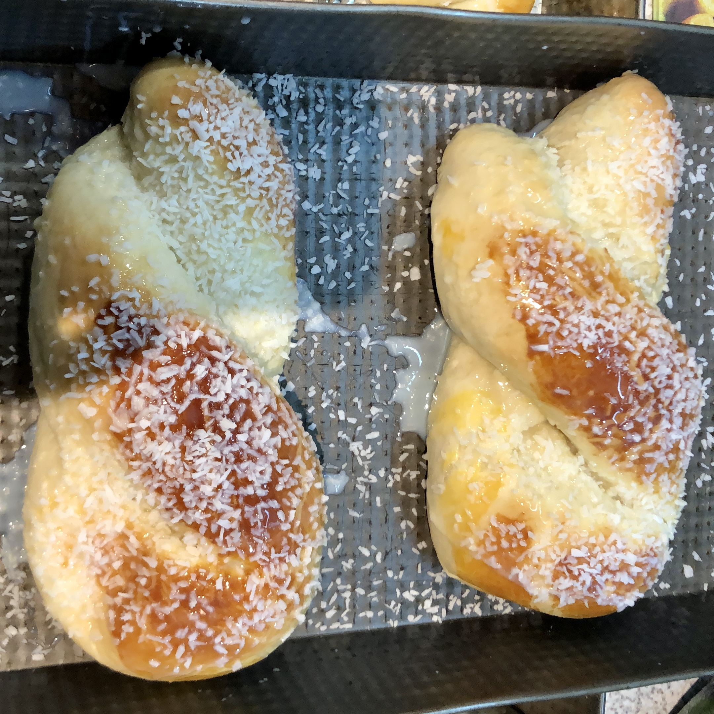

Wayne's Brazilian Donuts

Picture by Paulo Valim
Ingredients
- 300 ml of condensed milk
- 300 ml of water
- 200 ml of cooking oil
- 4 eggs
- 28g of organic yeast
- 1 kg of wheat flour
Directions
- Put the condensed milk in the blender and blend it for 5 minutes.
- Still in the blender, add the water, eggs, cooking oil and yeast.
- Remember to first dissolve the yeast in lukewarm water to activate it.
- Pour everything into a bowl and gradually add the wheat flour and mix.
- Let it rest until the dough has doubled in size.
- Roll up and bake.
- After roasting, brush with condensed milk and sprinkle coconut on top.
- Take a picture and tag me on instagram @plvalim 😎
- Eat without moderation